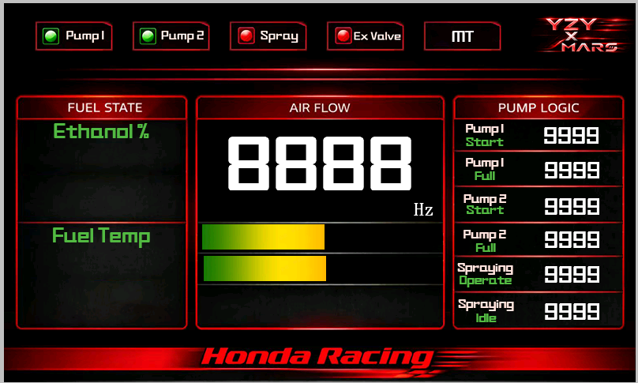
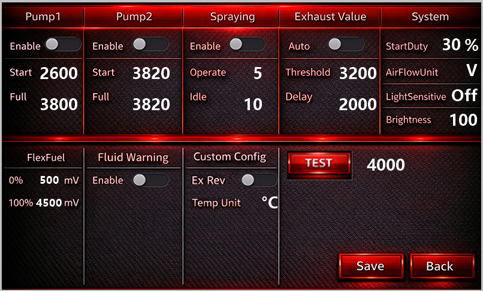

Automotive Control Unit / 汽车动力控制单元 使用说明书
STM32F103 + ESP32-C6 + Nextion HMI感谢一群热爱和坚持的小伙伴们。
Y&M
Y&M ACU 是一款专为汽车动力系统设计的智能控制单元，基于 STM32F103 主控芯片，配合 Nextion 串口触摸屏实现本地操作，同时通过 ESP32-C6 提供WiFi 无线控制面板，支持手机、平板等移动设备远程监控与调试。
安装在驾驶舱内的 3.5" 彩色触摸屏，提供主页、设置页、出厂页三个界面。所有参数修改、模式切换、手动控制均可在屏幕上完成。
ESP32 创建 WiFi 热点，手机浏览器访问即可查看实时数据和修改设置。Display 页展示运行状态，Setting 页远程调参，支持 CSV 数据导出。
Pump A / Pump B 各自拥有独立的起跳阈值、满量阈值和使能开关。支持 TEST 模式直接设定泵输出占空比，便于台架调试和故障排查。
支持 GM 风格 Flex Fuel 传感器（50~150Hz），实时解析乙醇含量（0~100%）和燃油温度。乙醇含量通过 DAC 模拟输出至 ECU，实现自动调整点火 Map。传感器未插入时自动显示 "-"，避免误读。
AT 模式：根据 MAF 频率自动开关排气阀。MT 模式：手动按钮直接控制。状态灯始终反映阀门实际 IO（非软件变量），并支持 EX_DELAY 延迟关闭防止频繁开关。
支持设定开启/关闭时长，主开关使能后自动循环。rainSwith 按钮透明度直观反映使能状态（127=使能，50=失能），RainStat 始终读取实际 IO。
ESP32 创建 "ACU Center" WiFi 热点，手机连入后访问 192.168.4.1 即可查看实时数据。200ms 刷新间隔，无需安装 App。
6000 条循环滚动存储（约 10 分钟），100ms 采样间隔，写满后自动覆盖最早数据。只记录使能的泵，节省内存。点击 Stop Record 下载 CSV，全屏遮罩显示旋转动画和实时 KB 数。
LightSen=0 手动模式，Bright 滑条直接控制。LightSen=1/2/3 为自动挡位，分别对应 LEVEL1/2/3_VAL 三档系数。自动模式下 Bright 框透明度置灰（aph=50），显示当前 dim 值。
液位低、电瓶过压（>14.8V）、电瓶欠压（<11V）三项告警。屏幕端 1 秒轮切图标，WiFi 端红色告警条，ESP32 和屏幕同步推送。
4 路模拟输入 + 2 路模拟输出（DAC），可直接接入 Defi 仪表，实时采集和输出模拟信号，兼容市面主流改装仪表。
出厂页提供一键自动校准，MAF / ETH / AFR 校准系数自动计算并写入 Flash。输入 2.5V 标准电压即可完成精度校准，无需手动计算。
使用双串口通道，支持同时一键更新双设备固件，让 OTA 不再繁琐，升级维护更高效。
进一步优化 ACU 控制盒的 PCB 体积，最终体积仅为 iPhone4 的 2/3，安装灵活，适配更多车型空间。
Nextion 串口屏是 ACU 的本地操作终端，安装在驾驶舱内，通过 USART2（230400bps）与 STM32 通信。屏幕端操作不依赖 WiFi，即使没有手机也能独立完成所有控制。

显示区域：

| 分组 | 参数 | 说明 | 范围 |
|---|---|---|---|
| 泵 A | Enable | 泵 A 使能开关 | ON / OFF |
| Start | 起跳阈值，MAF 超过此值开始输出 PWM | 0 ~ 9999 | |
| Full | 满量阈值，MAF 达到此值输出 100% | 0 ~ 9999 | |
| 泵 B | Enable | 泵 B 使能开关 | ON / OFF |
| Start | 起跳阈值 | 0 ~ 9999 | |
| Full | 满量阈值 | 0 ~ 9999 | |
| 喷淋 | Main | 喷淋主开关（rainSwith 透明度联动） | ON / OFF |
| On Time | 单次喷淋开启时长 | 秒 | |
| Off Time | 两次喷淋间隔时长 | 秒 | |
| 排气 | Auto Mode | AT=MAF 自动控制，MT=手动按钮控制 | ON / OFF |
| Threshold | AT 模式下排气开启的 MAF 阈值 | 0 ~ 9999 | |
| Delay | 关闭延迟（条件消失后延迟关闭） | 毫秒 | |
| 显示 | Airflow Unit | MAF 显示单位 Hz 或 mV | Hz / mV |
| LightSen | 0=手动亮度，1~3=自动挡位 | 0 ~ 3 | |
| Bright | 手动模式亮度值；自动模式显示当前 dim（框透明度联动） | 0 ~ 100 | |
| 校准 | Flex 0% | 乙醇 0% 对应的 DAC 输入值 | 0 ~ 4095 |
| Flex 100% | 乙醇 100% 对应的 DAC 输入值 | 0 ~ 4095 | |
| Ex Reverse | 排气阀控制逻辑反向（高电平触发/低电平触发） | ON / OFF | |
| Temp Unit | 温度显示单位 °C / °F | °C / °F |
coeff = 2500 × 40950000 / (3300 × ADC)dim = AD_LIGHT_SENS × LEVELx / 100ESP32-C6 模块作为 ACU 的无线扩展终端，通过 USART3（115200bps）接收 STM32 广播的 Nextion 显示数据，解析后在网页端实时呈现。WiFi 端适合远程监控、参数微调、数据记录导出，不需要物理接触屏幕。
打开手机/平板 WiFi，搜索热点 ACU Center，输入密码 acu666666 连接。
浏览器地址栏输入 http://192.168.4.1，自动加载控制面板。支持 Chrome、Safari、Edge 等现代浏览器。
Display 页查看实时数据，Setting 页修改参数，LOG 区记录和导出数据。所有数据每 200ms 自动轮询刷新。
WiFi Display 页面展示内容：
与 Nextion 屏幕端设置页完全同步，所有参数修改后点击 SAVE SETTING 下发至 STM32。WiFi 端做了以下防冲突优化：
点击 Start Record（绿色按钮），按钮变灰，系统开始 100ms 间隔记录。6000 条循环滚动，约 10 分钟，写满后自动覆盖最早数据。
6000 条循环滚动存储（约 10 分钟），100ms 采样间隔，写满后自动覆盖最早数据。只记录使能的泵，未使能的泵跳过以节省内存和 CSV 空间。
点击 Stop Record（红色按钮），弹出全屏遮罩 + 旋转动画 + 实时 KB 数显示，完成后自动下载 CSV。
Time(ms),MAF,PumpA(%),ExValve100,1250,45,1200,1260,46,1Time(ms),MAF,PumpA(%),PumpB(%),ExValve100,1250,45,30,1| 操作场景 | 屏幕端操作 | WiFi 端操作 | 同步效果 |
|---|---|---|---|
| 修改参数 | 设置页修改 → SAVE | Setting 页修改 → SAVE | 双向同步，先保存者为准 |
| 切换排气模式 | 点击 ATMT 图标 | 点击 AT / MT 按钮 | STM32 广播状态，两端同步更新 |
| 开关喷淋 | 点击 rainSwith 图标 | 点击 Spray 按钮 | 两端状态一致 |
| 切页 | 点击设置/返回 | 点击 Display / Setting Tab | 网页切页会通知 STM32，屏幕跟随切换 |
| 数据记录 | 不支持 | Start/Stop Record + CSV 下载 | 仅 WiFi 端支持 |
ACU Center WiFi，浏览器访问 192.168.4.1acu_log.csv，可用 Excel 分析| 现象 | 可能原因 | 解决方法 |
|---|---|---|
| WiFi 连不上 | ESP32 未启动或距离过远 | 检查 ESP32 供电，靠近设备重试 |
| 泵无输出 | Enable 未打开 / Start 阈值过高 | 进入设置页打开 Enable，适当降低 Start 值 |
| 排气阀不响应 | 处于 AT 模式 / MT 模式但按钮被禁用 | 切换到 MT 模式后操作，或检查 EX_REV 设置 |
| 乙醇显示 "-" | 传感器未插入或频率异常 | 检查传感器连接，确认频率在 50~150Hz 范围 |
| 告警图标闪烁 | 液位低 / 电瓶电压异常 | 检查冷却液液位，测量电瓶电压是否在 11~14.8V |
| 设置保存后无效 | 未点击 SAVE / Flash 写保护 | 确保点击 SAVE 按钮，检查 Flash 扇区是否正常 |
| 下载 LOG 卡顿 | 数据量大，传输需要时间 | 等待进度条完成，6000 条约需 5~10 秒 |
| 屏幕和 WiFi 状态不一致 | ESP32 串口数据丢失或延迟 | 检查 USART3 接线，重启 ESP32 模块 |